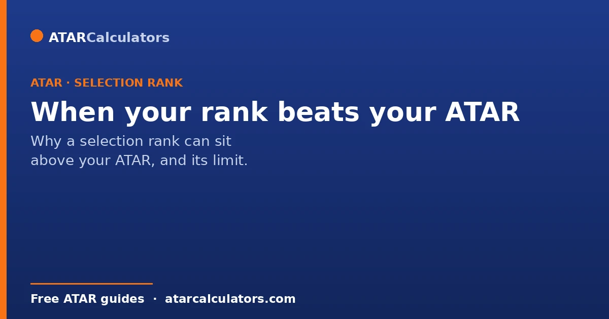
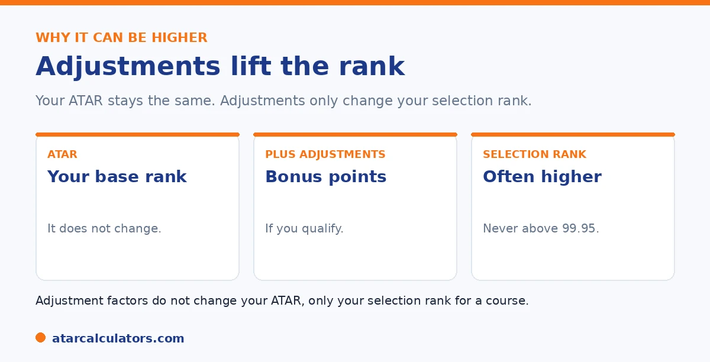

Here is the short version. Your selection rank is your ATAR plus any adjustment factors, so it is often higher than your ATAR. This is normal and expected. The adjustments do not change your ATAR itself, only your selection rank for eligible courses. Your selection rank cannot go above 99.95, the maximum, no matter how many adjustments you get.
It can be a pleasant surprise to see a selection rank above your ATAR, and some students worry it is an error. It is not.
Below is exactly why it happens, and its one limit. To see your own numbers, use our selection rank calculator.
Key takeaways
- Your selection rank is your ATAR plus adjustment factors.
- So it is often higher than your ATAR. This is normal.
- The adjustments do not change your ATAR itself.
- Your selection rank cannot go above 99.95.
- It can be different for each course.
- A higher selection rank can help you meet a cut-off.
Why it is higher
The reason is simple. Your selection rank is your ATAR plus any adjustment factors. Since adjustments are added on top, your selection rank ends up higher than your ATAR whenever you qualify for any.

So a selection rank above your ATAR is not an error. It means you have picked up adjustments for that course, which is exactly the point.
It does not change your ATAR
A common worry is that a higher selection rank somehow changes your ATAR. It does not. Your ATAR stays exactly the same. The adjustments only apply to your selection rank for eligible courses.
So you have, in effect, two numbers: your fixed ATAR, and a selection rank that can be higher. Universities use the selection rank to make offers. For the difference, see our selection rank vs ATAR guide.
Want to see your selection rank?
Try the selection rank calculator →The one limit: 99.95
There is a ceiling. Your selection rank cannot go above 99.95, the maximum possible ATAR. If your ATAR plus adjustments would exceed it, your rank is simply 99.95.
So a student already near the top has little room for adjustments to add. A student a few points below a cut-off, though, can find adjustments make the real difference.
It can differ by course
Because each university sets its own schemes, your selection rank can be higher for some courses than others. You might see a big boost at one university and none at another, for the same ATAR.
That is normal, and worth checking course by course. Your ATAR is the same everywhere; your selection rank is not.
How a higher rank helps you
A higher selection rank can be the thing that gets you an offer. Since course cut-offs are themselves selection ranks, a boosted rank may lift you to or above a cut-off you would have missed on ATAR alone.
So it is worth chasing every adjustment you qualify for. See our checklist of boosts to make sure you are not missing any.
A concrete case shows why the higher rank is what really counts on offer day. Suppose your ATAR is 86 and the course you want has a published cut-off of 90. On your ATAR alone you miss. But say you qualify for a subject bonus and a regional adjustment worth four points between them. Your selection rank becomes 90. The cut-off is itself a selection rank, so you now meet it. The offer is made against the higher number, not your bare ATAR. This is why two students with the same ATAR can get different offers. The one who claimed every adjustment they were entitled to competes at a higher rank. The practical implications are worth acting on. First, never rule out a course just because your raw ATAR sits below its cut-off. This is because your adjusted rank might reach it. Second, actively check every scheme you might qualify for, subject, regional, equity, elite athlete. This is because an uncounted adjustment is a lost advantage. Third, remember the benefit is concentrated in the middle of the range, where a few points can cross a cut-off, and shrinks near the 99.95 ceiling. Read this way, your selection rank, not your ATAR, is the number to compare against the courses you want. Lifting it through legitimate adjustments is one of the most reliable ways to widen your options.
How much higher can it be?
Your selection rank can be higher than your ATAR by the total of your adjustments, up to the university’s cap, commonly around 10 points. So the gap between your ATAR and your selection rank is bounded by how many adjustments you qualify for and the cap.
In practice, most students see a smaller lift than the full cap, because few qualify for every scheme at once. So expect a realistic few points rather than the maximum, unless you clearly qualify for several schemes.
Not every course adjusts your rank
Some courses offer few or no adjustments, especially highly competitive ones. For those, your selection rank may equal your ATAR, because no bonus points are added. So a higher selection rank is not guaranteed for every course.
This is why your selection rank varies by course. A course that rewards your subjects and circumstances gives you a higher rank; one that offers no adjustments leaves you on your ATAR. Check each course to know which applies.
Does a higher selection rank improve my chances?
Yes. Because universities compare your selection rank to the course cutoff, a higher selection rank meets cutoffs more easily and improves your chances of an offer. That is the whole point of adjustments: to lift the rank used to consider you.
So qualifying for adjustments genuinely helps, especially near a cutoff, where a few points can be the difference between an offer and a near miss. A higher rank is a real advantage.
A higher rank is not a guarantee
A higher selection rank improves your chances, but it does not guarantee an offer. Cutoffs can shift year to year with demand, and meeting a cutoff is necessary but not always sufficient if places are limited. So treat adjustments as improving your odds, not securing a place.
So aim to clear a cutoff comfortably rather than exactly, and keep realistic backup preferences. A strong selection rank is a powerful help, but it works best alongside sensible course choices.
Common questions
Why is my selection rank higher than my ATAR?
Because your selection rank is your ATAR plus any adjustment factors you qualify for. The adjustments are added on top, so your selection rank is higher whenever you get any. This is normal and expected.
Can a selection rank be above 99.95?
No. Your selection rank cannot exceed 99.95, the maximum ATAR. If your ATAR plus adjustments would go higher, your selection rank is simply capped at 99.95.
Does a higher selection rank change my ATAR?
No. Your ATAR stays exactly the same. The adjustments only apply to your selection rank for eligible courses. You effectively have two numbers: a fixed ATAR and a selection rank that can be higher.
Does a higher selection rank help me get in?
Yes. Course cut-offs are themselves selection ranks. So a higher selection rank can lift you to or above a cut-off you would miss on ATAR alone. It can be the difference between an offer and a near miss.
Why is my selection rank different for each course?
Because each university sets its own adjustment schemes, often different ones per course. So your selection rank can be higher for some courses than others, even though your ATAR is the same everywhere.
See your selection rank
Add your ATAR and adjustments to see your selection rank. Free, and no signup.
Open the selection rank calculator →Related guides
This guide is general information for students and parents, not formal admissions advice. Adjustment factors, schemes, caps and course cut-offs are set by each university and can change every year. They differ from one institution to another, and from course to course within the same institution. Always confirm the current details with the specific university and your state admissions centre (UAC, VTAC, QTAC, SATAC or TISC). A useful starting point is UAC's guide to selection rank adjustments. Reviewed by the ATARCalculators Editorial Team.